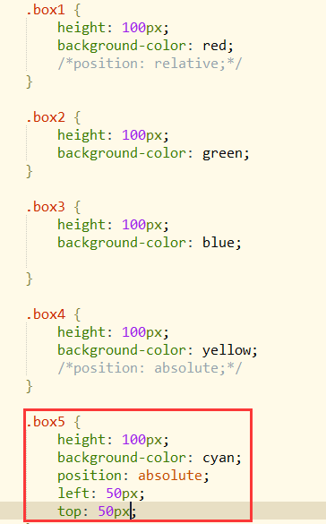
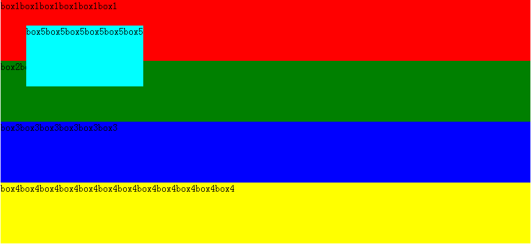
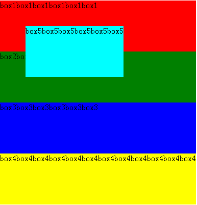
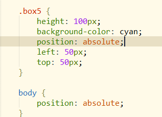
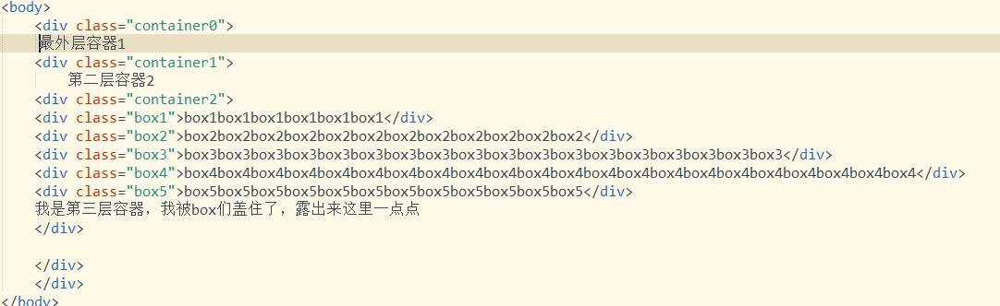
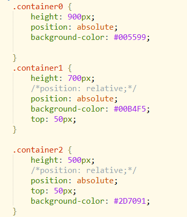
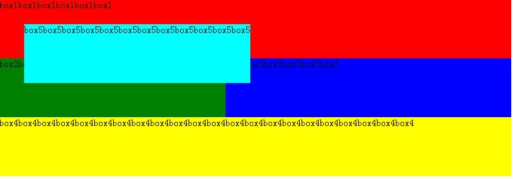

一、Los cuatro valores de position: static, relative, absolute, fixed.
Posicionamiento absoluto: absolute y fixed se denominan colectivamente posicionamiento absoluto
Posicionamiento relativo: relative
Valor predeterminado: static
二、La diferencia entre el posicionamiento relative y el posicionamiento absolute
Ejemplo:
Código HTML:

Código CSS:

Efecto inicial:

1、relative: se mueve en relación con la posición original. Después de establecer esta propiedad, el elemento permanece en el flujo del documento y no afecta el diseño de otros elementos.
Establecer relative en el segundo box:
El elemento se desplaza en relación con su posición original, el ancho y el alto no cambian, y estira el contenedor.


2、absolute: el elemento saldrá del flujo del documento. Si se establece un desplazamiento, afectará la posición de otros elementos.
Establecer absolute solo en el quinto box:
Nota: cuando el elemento no tiene un ancho definido, el ancho está determinado por el contenido del elemento; el efecto es el mismo que con el método float.


Análisis del principio del posicionamiento absolute:
1. Cuando el elemento padre no tiene establecido un posicionamiento relativo o absoluto, el elemento se posiciona con respecto al elemento raíz (es decir, el elemento html) (es que el elemento padre no lo tiene).
Ahora dale valores de desplazamiento a box5 para verificar:


2. Si el elemento padre tiene establecido un posicionamiento relativo o absoluto, el elemento se posicionará con respecto al elemento padre más cercano que tenga establecido un posicionamiento relativo o absoluto (o más bien, se posiciona con respecto al elemento padre más cercano que no sea static, porque el elemento por defecto es static).
Suplemento: Algunas personas en Internet lo explican como que el elemento se posiciona con respecto al primer elemento padre que no sea static. Creo que esto puede inducir fácilmente a error. La anterior es mi propia definición.
Ahora dale al elemento body un posicionamiento absoluto (el elemento body se establece como absolute, el ancho de todo el contenedor está determinado por el div más largo, el ancho se reduce):
En este momento, box5 ahora se posiciona con respecto al elemento body.

Pongo las dos imágenes anteriores, una posicionada con respecto al elemento html y otra con respecto a body, juntas. Al comparar, se puede ver en la imagen inferior que box5 posicionado con respecto a body está más lejos del texto box1. Por lo tanto, cuando ningún elemento padre tiene establecido un posicionamiento relativo o absoluto, el elemento con absolute se posicionará con respecto al elemento raíz html.

Código CSS:

Verifiquemos de nuevo esta afirmación:Si el elemento padre tiene establecido un posicionamiento relativo o absoluto, el elemento se posicionará con respecto al elemento padre más cercano que tenga establecido un posicionamiento relativo o absoluto.
Ahora envuelve los boxes en tres contenedores padre, de la siguiente manera:
Código HTML:

Los estilos CSS de los tres contenedores padre son los siguientes:

El aspecto actual. Ahora box5 no se posiciona con respecto al primer elemento que no sea static como se dijo (según esa afirmación, mi box5 debería desplazarse con respecto al contenedor más externo 1), sino con respecto al elemento padre más cercano que tenga establecido un posicionamiento relativo o absoluto:

Ahora comenta el position del segundo contenedor y del tercer contenedor (sin position, establecer los valores top, left, bottom, right no tiene efecto), el resultado es el siguiente:
Ahora el único elemento padre externo de box5 con posicionamiento relativo o absoluto es el contenedor más externo 1, por lo que box5 ahora se posiciona con respecto al contenedor más externo 1. (Obviamente box5 se ha movido).

Ahora solo comenta el position del tercer contenedor.
El principio es el mismo. Ahora se posiciona con respecto al segundo contenedor (top: 50px, el elemento padre más cercano con posicionamiento relativo o absoluto):

Arriba, tanto el segundo como el tercer contenedor estaban configurados con posicionamiento relativo; ahora cámbialos a posicionamiento absoluto:
Código CSS:

El principio es el mismo que establecer el segundo y el tercer contenedor como relative. Solo que después de establecerlos como absolute, el tercer contenedor, junto con su contenido, sale del flujo del documento, por lo que no estira el ancho de los dos contenedores externos.
El efecto actual:

Añade otro contenedor en el exterior para verificar el efecto anterior de que el primero y el segundo no se estiran.

El ancho está limitado por el ancho del contenedor padre superior. Ahora ensancha el ancho del contenedor de la primera capa, y la segunda y la tercera capa se ensanchan en consecuencia, el efecto es el siguiente:

Pero si hay un div largo dentro del contenedor, el contenedor aún puede estirarse, el efecto es el siguiente:

Suplemento:
Después de que box2 se establece con posicionamiento absolute, sale del flujo del documento, box3 se mueve hacia arriba y el lado izquierdo queda cubierto por box2.

Sobre la base de lo anterior, box3 se establece como absolute. box3 sale del flujo del documento (como si box3 flotara, flotando sobre box2), box4 se mueve hacia arriba, box3 cubre box2 y parte de box4.

De manera similar, si box4 se establece con posicionamiento absoluto, flotará hacia arriba y cubrirá box3 y box2.
Resumen
relative: el posicionamiento es relativo a su propia posición.(Al establecer un desplazamiento, se desplazará con respecto a su propia posición). Un elemento con relative permanece en el flujo del documento, el ancho y el alto del elemento no cambian, y establecer un desplazamiento no afecta la posición de otros elementos. Cuando el contenedor más externo se establece como relative, sin establecer un ancho, su ancho es el ancho de todo el navegador.
absolute: el posicionamiento se determina con respecto al elemento padre más cercano que tenga establecido un posicionamiento absoluto o relativo. Si ningún elemento padre tiene establecido un posicionamiento absoluto o relativo, entonces el elemento se posiciona con respecto al elemento raíz, es decir, el elemento html.. Un elemento con absolute sale del flujo del documento. Cuando no se establece un ancho, el ancho está determinado por el contenido del elemento. Después de salir, la posición original queda efectivamente vacía, y los elementos de abajo ocuparán esa posición.
Enlace original: http://www.cnblogs.com/yy95/p/5672440.html